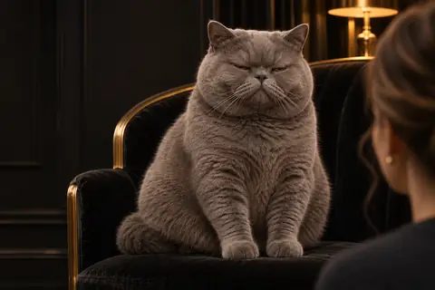

Koci Notatnik / Krótkie opowieści
Kocia komunikacja · 2 min czytaniaMrugnąłem do człowieka. Zapytał, czy potrzebuję drzemki.
Postanowiłem okazać człowiekowi odrobinę sympatii. Spojrzałem na niego i powoli przymknąłem oczy. — Śpiący? — zapytał. Przy tym poziomie romantyzmu nawet karton wydaje się rozmowny.

Co oznacza powolne mruganie kota?
Powolne przymykanie oczu może być elementem przyjaznej komunikacji. Badania wykazały, że koty odpowiadały zwężaniem oczu na powolne mruganie człowieka; nie jest to jednak uniwersalny test uczuć.
Wiadomość bez powiadomienia dźwiękowego
Sam go wybrałem. Widziałem kciuki, mieszkanie i pełną lodówkę. Nie sprawdziłem obsługi wiadomości niewerbalnych. Rekrutacja powinna mieć drugi etap.
Usiadł naprzeciwko i zaczął patrzeć. Intensywnie. Jakby próbował rozpoznać numer seryjny na moim czole.
Kochany, łagodniej. Nie jestem zagadką z programu kryminalnego. Masz odpocząć przy kocie, a nie prowadzić przesłuchanie futra.
Wreszcie rozluźnił twarz i przymknął powieki. Odpowiedziałem spokojnym spojrzeniem. Wzruszył się tak mocno, że prawie zwołał rodzinę. Niech ktoś przygotuje saszetkę na uspokojenie personelu.
Potem chciał powtórzyć wszystko do kamery. Odwróciłem głowę. Uczucia, kochany, nie są usługą dostępną po kliknięciu „nagraj ponownie”.
Co ma zapamiętać Twój człowiek
- Usiądź w pewnej odległości, rozluźnij spojrzenie i delikatnie przymknij oczy.
- Nie wpatruj się uporczywie ani nie zbliżaj twarzy do kota.
- Brak odpowiedzi uszanuj — nie oznacza nieudanego związku.